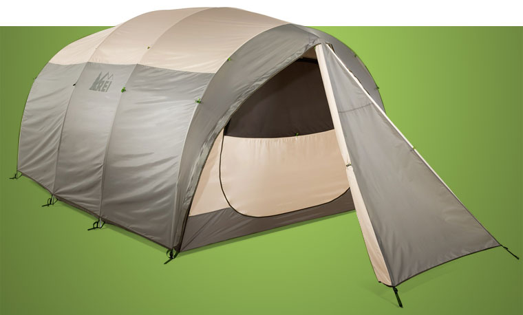

--------------------------AYISA TENTS -------------------------
"it's the quality that makes a differance."
If you're new to camping, or even just looking to upgrade your existing tent, it can be a little overwhelming trying to figure out which of the many different types of tents will be suitable for your needs. Gone are the days of the standard A-frame canvas tents and their heavy wooden poles. No longer do you need a whole team of helpers and a 50 page instruction manual to set up your tent. The tent industry has moved on leaps and bounds since then. And with all that convenience and technological advances offered by modern tents comes a whole world of decisions. Decisions that quite frankly can become a little off-putting, forcing would-be campers to opt for unsuitable tents, or worse still, throw in the towel and forget about camping altogether. Hang on in there. Yes, there are loads of types of tents to choose from. But many of them can be immediately discounted, depending on your needs and wants.
AYISA RIDGE/A-FRAME TENTS
Ask a kid to draw a tent, and they will more often than not draw you a ridge tent , which is interesting as there aren't many of them kicking around these days! Traditionally they comprised thick canvas stretched over a horizontal pole supported by a vertical pole at each end. Their stability largely relied upon the guylines and tie-outs, and how well they were placed. These days, ridge tents have moved with the times and use lightweight aluminum poles and outer fly sheets made from waterproof polyester or nylon. Modern ridge tents are usually best suited to two people. So if you are looking for something bigger, bell tents are probably the nearest you will get to a large traditional ridge tent
AYISA DOME TENTS
Together with tunnel tents, dome tents are one of the most common types of tents around. They are made up of two flexible poles that cross at the top of the dome and bend to be anchored to the floor on each of the four dome corners. Sometimes the poles are on the outside of the rainfly, but usually the rainfly sits over the top of the poles with an inner tent clipped to the underside of the poles. Many dome tents will have a small porch area, and some designs have an extra pole to make the porch space bigger. Although available in many different sizes, dome tents are best suited to up to four people, as the bigger they are the more unstable they become.
AYISA TUNNEL TENTS
These are great for larger groups and families as they provide lots of headroom and plenty of liveable space. They are made up of a series of flexible poles that loop from one side of the tent to the other to form a tunnel shape for the rainfly to attach to. They rely on guy lines to provide stability, and when put up well they can withstand bad weather reasonably well, especially the bigger models compared with dome tents.
AYISA GEODESIC TENTS
Since the dawn of the dome tent, designers have been constantly improving upon its basic structure to make it stronger and more able to stand up to the elements. The result is a geodesic tent, which is essentially a dome tent but with more poles. Generally speaking, the more poles that cross each other, the greater the stability of the tent. So as you can imagine, geodesic tents are better suited to camping out in the wilderness than casual car camping. Because of this, they are generally higher quality (and higher priced) in every aspect. Due to their focus on strength and stability, you don't get many large geodesic tents, although they do exist. They are best suited to up to 4 people.
AYISA CABIN TENTS
Cabin tents are usually made up of aluminum poles that fit together to create the frame of what looks like a cabin! A waterproof polyester, nylon or sometimes canvas rainfly encases the frame to form the walls and roof of your cabin which provides loads of livable space that you can usually stand up in. Cabin tents are often divided into rooms with internal dividers, making them the perfect choice for family camping. They tend to be fairly cheap, in both price and quality, and aren't renowned for their ability to withstand bad weather. Ideal for fair weather camping.
AYISA PYRAMID TENTS
These are the most simple tent shape that usually comprise of a single central pole with a rainfly draped over the top and staked down at the corners/edges of the fly. Guylines and stakes play a very important part in providing stability to pyramid tents, and as with ridge tents, the bigger they are the less stable they become. There are lots of lightweight models popping up these days that are bordering on tarp-like setups, but traditionally they were made of thick canvas or hide supported by heavy wooden poles (think tipi and bell tents).
TENTS FOR FAMILIES, FESTIVAL AND CAR CAMPING
If the relative comfort of car camping is your thing, and you find yourself spending lots of weekends through the summer settling into camp life, then get yourself a decent family tent with multiple rooms. But if you�re a festival frequenter, you may be better off going for something smaller and less expensive like a pop-up tent.
AYISA MULTI ROOM TENTS

These are perfect for family camping or when camping with a large group. If you are car camping for more than a couple of days, then a multi-room tent is a good idea, even if you only have a small family. Many families of 4 will opt for a tent that can accommodate 8 or 10 people to enjoy the extra space and privacy.
AYISA INFLATABLE TENTS
Tent capacity: 1 - 10
Most common shape: Cabin, tunnel or geodesic<
Desirable features:
Easy to put up and take down
Very packable
Lots of inflatable beams (instead of poles)
Comes with a pump and a repair kit!
AYISA POP UP TENTS
Tent capacity: 1 -6
Most common shape: Dome or tunnel
Desirable features:
Inexpensive
Lightweight
Mega easy and quick to put up and take down
A porch
Good ventilation.